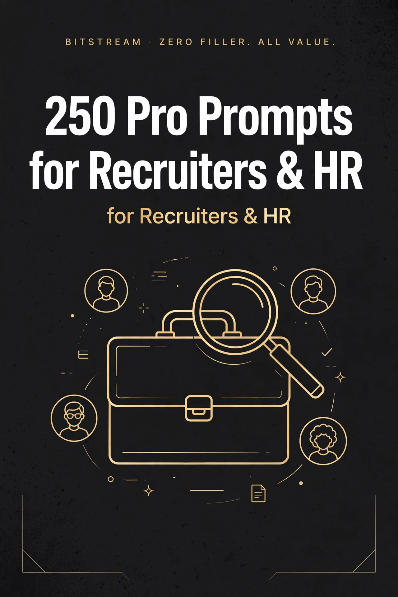

BITSTREAM · ZERO FILLER. ALL VALUE.
250 Pro Prompts
for Recruiters & HR
250 copy-paste prompts for hiring pros.
Open a free AI tool, paste, fill in the blanks, done.
PRO PACK · $14.99
How to use this pack (60 seconds)
- Open a free AI tool — ChatGPT (chatgpt.com), Claude (claude.ai), or Gemini (gemini.google.com). No account tricks, no paid plan needed.
- Copy any prompt and replace the [BRACKETED] parts with your details.
- Be specific. Your role, your industry, your company size — specifics in, quality out. "Write a job description" gets a generic list. "Write a job description for a bilingual warehouse supervisor, 2nd shift, Fort Pierce FL, $24-28/hr" gets a posting.
- Treat the first answer as a draft. Reply with "make it shorter," "more formal," or "add a salary line" until it's right.
- Talk instead of typing. Every one of these tools has a voice mode — ramble while you walk, let it turn the ramble into clean text.
Rule 1 — Describe, don't write. You don't need to write well. You just need to describe what you want in plain words. The AI does the writing.
Rule 2 — HR is high-stakes: verify before you act. Use AI as an organizer and drafting aid. For anything touching employment law, pay compliance, or hiring decisions, verify with employment counsel or HR compliance — never treat an AI answer as a legal conclusion.
Rule 3 — One hire at a time. Don't try to AI your whole HR operation today. Pick one prompt. The job post, the interview set, the rejection email.
1 · Job Descriptions & Role Intake
Turn raw notes and intake answers into polished, searchable, inclusive job postings.
PROMPT 001
Turn Raw Hiring Notes Into a Polished Job Ad
Turn my messy hiring notes into a polished, ready-to-post job ad with an attention-grabbing opening, responsibilities, qualifications, pay range, and benefits sections. My notes: [PASTE YOUR RAW NOTES, BULLETS, OR VOICE-MEMO TRANSCRIPT]. Role: [JOB TITLE] at [COMPANY] in [LOCATION / REMOTE].
PROMPT 002
Hiring-Manager Intake Question List
Give me a complete intake question list for a hiring-manager meeting about this open role, organized by: role purpose, top 3 priorities for the first 90 days, must-have skills, nice-to-haves, team dynamics, compensation range, and interview process. Role: [JOB TITLE], team: [TEAM NAME].
PROMPT 003
Rewrite Duties as Impact Bullets
Rewrite these flat duty descriptions as impact bullets that start with strong action verbs and highlight results, scale, or who benefits. Keep each bullet under 25 words. Duties: [PASTE THE DUTY LIST].
PROMPT 004
Leveling Variants: Associate, Senior, Staff
Take this job description and write three leveled variants — Associate, Senior, and Staff/Lead — where each level clearly raises the bar on scope, autonomy, and business impact. Base JD: [PASTE JD]. Show the differences in a side-by-side comparison table.
PROMPT 005
Compliant Salary-Band Paragraph
Write a clear, candidate-friendly salary paragraph for this job posting that states the pay range [MIN]–[MAX] [PER HOUR / PER YEAR], explains what moves someone up within the range, and notes any bonus or commission. Do not invent a range; use only the numbers I gave. Flag anything that looks like it may need review under local pay-transparency rules — this is an organizing draft only, not legal advice.
PROMPT 006
Perks & Benefits Section Writer
Write an appealing perks-and-benefits section for this job posting based only on these actual benefits: [LIST HEALTH, PTO, RETIREMENT, FLEXIBILITY, ETC.]. Use plain language, skip corporate jargon, and end with one sentence on how benefits support life outside work. Do not add benefits I did not list.
PROMPT 007
Rewrite a Dry JD to Sell the Role
Rewrite this boring job description to sell the role to top candidates: punch up the opening paragraph, make the work sound exciting without lying, and close with why a great candidate would want THIS job at THIS company. Keep every fact accurate. Original JD: [PASTE JD].
PROMPT 008
Remote vs Hybrid JD Version
Rewrite this job posting for [REMOTE / HYBRID / ON-SITE] work. Spell out the work arrangement, schedule expectations, location or time-zone requirements, and what the company provides for remote setup. Role: [JOB TITLE]. Original: [PASTE JD].
PROMPT 009
Inclusive-Language Pass on a Job Description
Review this job description for language that could discourage qualified candidates — gendered words, unnecessarily aggressive tone, overblown requirements, or culture-fit clichés — and give me a rewritten version plus a list of what changed and why. JD: [PASTE JD]. This is an editing pass, not legal advice; I will have HR compliance review the final.
PROMPT 010
Must-Haves vs Nice-to-Haves Splitter
Take this long qualification list and split it into two short lists: true must-haves (the hire fails without them) and nice-to-haves (a bonus that can be learned on the job). Challenge me on any requirement that looks like a nice-to-have in disguise. List: [PASTE QUALIFICATIONS].
PROMPT 011
Job Title Optimization for Candidate Search
Give me 10 job titles for this role that real candidates actually type into job boards, ranked from most searchable to least, plus 3 creative titles to avoid and why. My working title: [WORKING TITLE]. Role summary: [2–3 SENTENCES].
PROMPT 012
Day-in-the-Life Paragraph
Write a vivid "day in the life" paragraph (120–150 words) for this role that walks a candidate through a realistic day, hour by hour, including one challenge and one rewarding moment. Role: [JOB TITLE]. Typical tasks: [LIST 4–6 TASKS]. Team: [TEAM CONTEXT].
PROMPT 013
Social-Media Version of a Job Ad
Condense this job posting into a punchy social-media post under 150 words with a hook line, 3 reasons to apply, and a clear call to action with the application link. Give me one version for LinkedIn and one shorter version for [FACEBOOK / INSTAGRAM / X]. Posting: [PASTE JD OR LINK DETAILS].
PROMPT 014
Internal Posting Version for Current Employees
Rewrite this external job posting as an internal posting for current employees: emphasize growth opportunity, what internal candidates already know that helps, how to apply internally, and whether their manager will be notified. Posting: [PASTE JD]. Internal contact: [NAME / EMAIL].
PROMPT 015
Temp / Contract Variant of a Role
Convert this full-time job description into a temp/contract posting: state the assignment length [DURATION], schedule [HOURS], hourly pay range [RANGE], what the contractor will own versus hand off, and whether there is temp-to-hire potential. Original: [PASTE JD].
PROMPT 016
Bilingual Requirement Wording
Write precise job-posting language for a role requiring [LANGUAGE 1] and [LANGUAGE 2]: state the required proficiency level for speaking, reading, and writing, how it will be assessed, and whether a pay differential applies. Keep it factual and role-specific — no vague "bilingual preferred" fluff. Role: [JOB TITLE].
PROMPT 017
90-Day Success Profile
Write a "what success looks like" section for this job posting: 3–4 concrete, measurable outcomes the new hire should achieve in their first 90 days. Role: [JOB TITLE]. Team goals: [DESCRIBE]. Make each outcome specific enough that both sides can tell whether it happened.
PROMPT 018
What This Role Is NOT (Anti-Responsibilities)
Write a short, honest "this role is NOT" section for this job posting that rules out the 3–4 things candidates often assume the job includes but it doesn't. Role: [JOB TITLE]. Common misconceptions: [LIST THEM]. Keep the tone respectful, not snarky.
PROMPT 019
Recruiter Compensation Talking Points
Give me a one-page recruiter cheat sheet for pitching compensation on this role: the approved range [RANGE], what's negotiable versus fixed, bonus/commission structure, benefits highlights worth mentioning, and 3 graceful responses when a candidate's ask is above the range. Role: [JOB TITLE].
PROMPT 020
Location, Travel & Schedule Wording
Write a clear logistics section for this job posting covering: exact work location [LOCATION], schedule [HOURS / SHIFTS], travel percentage [%] and type, overtime expectations, and any on-call duties. Flag any wording that could confuse candidates. Role: [JOB TITLE].
PROMPT 021
Essential Functions & Accommodations Wording
Draft an "essential functions" paragraph for this role listing only the truly essential physical and operational requirements, followed by a standard reasonable-accommodations statement. Requirements: [LIST]. This is a drafting aid only — have employment counsel or HR compliance review before publishing.
PROMPT 022
EEO Statement Pack
Draft three EEO/equal-opportunity statement options for our job postings — short, standard, and warm/extended — for [COMPANY] in [STATE]. These are starting drafts only; I will verify the final wording with employment counsel or HR compliance before use. Do not give legal conclusions about what we are required to include.
PROMPT 023
JD Modeled on Your Top Performer's Week
Help me write a job description based on what our best person in this role actually does. Interview me with 8–10 questions about their typical week, biggest wins, hardest parts, and the traits that make them great, then draft the JD from my answers. Role: [JOB TITLE].
PROMPT 024
Quick-Apply Mobile Version of a Job Ad
Rewrite this job posting as a mobile-friendly quick-apply ad: a 2-sentence hook, 5 scannable bullets (role, pay, schedule, location, top requirement), and a one-tap apply call to action. Cut everything a phone-scroller won't read. Original: [PASTE JD].
PROMPT 025
Candidate Referral Email Version
Write a short referral-request email I can send to [EMPLOYEES / MY NETWORK] for this open role: why it's a great opportunity in 3 sentences, who we're looking for in 3 bullets, the referral bonus [AMOUNT], and a one-click way to submit a name. Role: [JOB TITLE].
2 · Interview Question Sets
Structured, role-specific question sets that keep every interview fair and comparable.
PROMPT 026
STAR Behavioral Question Set for a Role
Create 8 behavioral interview questions in STAR format (Situation, Task, Action, Result) tailored to this role, each targeting one of these competencies: [LIST 4–8 COMPETENCIES, e.g., PROBLEM-SOLVING, TEAMWORK]. For each question, add 2 follow-up probes and what a strong answer sounds like. Role: [JOB TITLE].
PROMPT 027
Situational "What Would You Do" Question Set
Write 8 situational interview questions for this role — realistic "what would you do if…" scenarios drawn from the actual challenges of the job — with a model strong response and 1 red flag to watch for each. Role: [JOB TITLE]. Common challenges: [LIST 3–4].
PROMPT 028
Salesperson Interview Question Set
Create a 10-question interview set for a [BDR / AE / ACCOUNT MANAGER] covering: prospecting approach, discovery skills, objection handling, closing technique, quota history, CRM discipline, and resilience after lost deals. Include 2 role-play prompts and what great answers include. Product context: [WHAT THEY SELL].
PROMPT 029
Software Engineer Interview Question Set
Create a 10-question interview set for a [FRONTEND / BACKEND / FULL-STACK] software engineer at [JUNIOR / MID / SENIOR] level covering: system design thinking, debugging approach, code quality habits, collaboration in code review, and learning new tech. No trick questions or whiteboard puzzles. Tech stack: [STACK].
PROMPT 030
Customer Support Rep Question Set
Create a 10-question interview set for a customer support rep covering: de-escalating angry customers, explaining technical issues simply, multitasking across tickets, empathy under pressure, and learning the product. Include 2 mock-ticket role-plays with a sample customer message and grading notes. Support channels: [PHONE / CHAT / EMAIL].
PROMPT 031
Nurse Interview Question Set
Create a 10-question interview set for a [RN / LPN / CNA] in a [HOSPITAL / CLINIC / LONG-TERM CARE] setting covering: patient safety priorities, handling emergencies, communicating with families, teamwork during short staffing, and compassion fatigue. Include 2 clinical-scenario questions with what a safe answer includes. Unit: [UNIT / SPECIALTY].
PROMPT 032
Warehouse Associate Question Set
Create a 10-question interview set for a warehouse associate covering: safety mindset, physical stamina and attendance reliability, following pick/pack procedures accurately, forklift or equipment experience [IF APPLICABLE], and teamwork on a fast line. Shift: [SHIFT / HOURS]. Include 2 scenario questions about damaged goods and safety hazards.
PROMPT 033
Restaurant Manager Question Set
Create a 10-question interview set for a restaurant [GENERAL / ASSISTANT / SHIFT] manager covering: handling a rush with a short crew, dealing with difficult guests, coaching underperforming staff, food safety and health-code knowledge, and controlling labor and food costs. Concept: [RESTAURANT TYPE]. Include 1 role-play of a guest complaint.
PROMPT 034
Accountant Interview Question Set
Create a 10-question interview set for a [STAFF / SENIOR] accountant covering: month-end close process, reconciling discrepancies, explaining financials to non-finance people, handling audit requests, and relevant software [QUICKBOOKS / NETSUITE / EXCEL / ETC.]. Include 2 mini-case questions with sample numbers and what a correct approach looks like.
PROMPT 035
Teacher Interview Question Set
Create a 10-question interview set for a [GRADE / SUBJECT] teacher covering: lesson planning, classroom management, differentiating for struggling and advanced students, parent communication, and data-driven instruction. Include 1 sample lesson-plan prompt and 1 scenario about a disruptive classroom. School context: [DESCRIBE].
PROMPT 036
Marketing Manager Question Set
Create a 10-question interview set for a marketing manager covering: campaign strategy from brief to launch, reading analytics and making decisions, managing budget trade-offs, working with sales, and content or channel expertise in [SEO / PAID / SOCIAL / EMAIL]. Include 1 mini-case: "here's last quarter's numbers, what do you do next?"
PROMPT 037
Executive Assistant Question Set
Create a 10-question interview set for an executive assistant supporting [NUMBER] executive(s) covering: calendar triage under conflicts, handling confidential information, travel planning, anticipating needs, and juggling competing priorities. Include 2 inbox-triage scenarios with sample emails and what a great prioritization looks like.
PROMPT 038
First-Round Phone Screen Script
Write a complete 20-minute phone screen script for this role: a warm opener, 8 screening questions covering must-have qualifications, salary expectations, availability, and work authorization basics, plus a clear close explaining next steps. Role: [JOB TITLE]. Must-haves to verify: [LIST].
PROMPT 039
Panel Interview Round-Robin Assignment
Design a panel interview plan for this role with [NUMBER] interviewers: assign each panelist a distinct topic area so nothing is asked twice, give each 3–4 questions plus a scoring focus, and add a 10-minute candidate-Q&A block. Role: [JOB TITLE]. Panelists and their angles: [LIST NAMES / ROLES].
PROMPT 040
Structured Culture-Add Questions
Write 8 structured culture questions for this role that assess how a candidate ADDS to our culture rather than "fits in" — covering our values [LIST VALUES], working style, and collaboration — with a 1–5 scoring guide for each. Keep every question job-related and consistent across candidates.
PROMPT 041
Technical Assessment Follow-Up Questions
After a candidate completes this take-home or skills assessment, give me 8 debrief questions that reveal their real thinking: why they chose their approach, what they'd do differently with more time, how they'd explain it to a non-technical teammate, and where they got stuck. Assessment: [DESCRIBE THE TASK].
PROMPT 042
Coachability Interview Questions
Write 7 interview questions that reveal whether a candidate takes feedback well: times they were wrong, criticism they received, skills they're actively improving, and how they respond to a new process they disagree with. For each, describe what a coachable answer sounds like versus a defensive one. Role: [JOB TITLE].
PROMPT 043
Leadership Scenario Questions
Write 8 leadership scenario questions for a [TEAM LEAD / MANAGER / DIRECTOR] candidate covering: giving tough feedback, resolving team conflict, making an unpopular decision, developing a struggling performer, and leading through change. Each scenario should include the setup, the question, and 3 markers of a strong answer.
PROMPT 044
Second-Interview Deep-Dive Set
Create a second-round interview set that goes deeper than round one: 8 questions that pressure-test the candidate's proudest accomplishment, biggest failure, domain expertise, and long-term fit for this role — with follow-up probes that keep a rehearsed answer from skating by. Round-one notes: [PASTE KEY TAKEAWAYS].
PROMPT 045
STAR Answer Evaluation Rubric
Build a simple interviewer scorecard for STAR answers: a 1–5 rating scale with clear descriptions for Situation, Task, Action, and Result separately, plus overall red flags and green flags. Make it usable by hiring managers with no recruiting training. Role competencies: [LIST].
PROMPT 046
Curveball / Thinking-on-Your-Feet Questions
Write 8 curveball interview questions for this role that test adaptability and clear thinking under mild pressure — unusual but job-relevant, never gimmicky or embarrassing. For each, note what the question actually reveals about the candidate. Role: [JOB TITLE].
PROMPT 047
Prioritization & Decision-Making Question Set
Write 7 interview questions that reveal how a candidate prioritizes and decides: competing deadlines, saying no to stakeholders, making a call with incomplete information, and what they deprioritize when everything is "urgent." Include what strong prioritization logic sounds like. Role: [JOB TITLE].
PROMPT 048
Conflict & Difficult-Conversations Question Set
Write 7 interview questions about handling conflict at work: disagreements with a boss, friction with a peer, delivering bad news, and a time they repaired a damaged working relationship. For each, add what healthy conflict resolution sounds like in the answer. Role: [JOB TITLE].
PROMPT 049
Motivation & Career-Goals Question Set
Write 7 interview questions that uncover what genuinely motivates a candidate: why THIS role at THIS company, what work energizes them, where they want to be in 2–3 years, and what would make them leave a job. Include how to spot a thoughtful answer versus a rehearsed one. Company context: [DESCRIBE].
PROMPT 050
Legal-Safe Interview Do's & Don'ts Checklist
Create a one-page interview do's-and-don'ts checklist for our hiring managers: questions to never ask, how to keep notes factual and job-related, and what to do if a candidate volunteers protected information. This is an organizing checklist only — I will have employment counsel or HR compliance verify it before distribution. Do not give legal conclusions about what the law requires.
3 · Resume Screening & Scorecards
Structured screening prompts that turn resume review into consistent, defensible yes/no decisions.
PROMPT 051
Build a Role-Specific Screening Rubric
Act as a senior recruiter. Build a resume screening rubric for a [JOB TITLE] at a [COMPANY TYPE]. Include 6–8 weighted criteria (skills, experience, industry, education, achievements), a 1–5 scoring scale with plain-language anchors for each score, and a minimum total score for moving a candidate to a phone screen.
PROMPT 052
Score a Resume Against the Job Description
Act as a recruiter. Here is the job description: [PASTE JD]. Here is a candidate's resume: [PASTE RESUME]. Build a skills-match table with three columns — requirement from the JD, evidence from the resume (with the exact line or dates quoted), and a 1–5 rating. End with an overall verdict: advance, hold, or reject, with one sentence of reasoning.
PROMPT 053
Must-Have vs Nice-to-Have Keyword Screen
Act as a recruiter. Split the requirements in this job description into two lists — must-haves and nice-to-haves — then screen this resume against each: [PASTE JD] / [PASTE RESUME]. For each item, mark present, partially present, or missing, and quote the resume line where possible. Flag any missing must-have as a dealbreaker question for the phone screen.
PROMPT 054
Red-Flags and Green-Flags Checklist
Act as a recruiter. Read this resume for a [JOB TITLE] role and return two checklists — red flags (gaps, short tenures, vague claims, title inflation, missing basics) and green flags (progression, quantified results, relevant tenure, stability). [PASTE RESUME] Keep each flag to one line with the specific resume evidence, and do not draw legal or protected-class conclusions — flag patterns only.
PROMPT 055
Compare Two Resumes Side by Side
Act as a recruiter hiring for [JOB TITLE]. Compare Candidate A and Candidate B head to head: [PASTE RESUME A] / [PASTE RESUME B]. Score both on relevance, results, progression, and tenure, name the stronger candidate for an interview and say exactly why in two sentences. If it is close, say what one phone-screen question would settle it.
PROMPT 056
Resume to Hiring-Manager Brief
Act as a recruiter. Turn this resume into a 10-line hiring-manager brief for a [JOB TITLE] opening: 3 headline strengths with evidence, 2 areas to probe in the interview, current or most recent role, years of relevant experience, and your recommendation (advance or pass) in one line. [PASTE RESUME] Write it so a busy manager can read it in 60 seconds.
PROMPT 057
Screen a Career Changer's Resume
Act as a recruiter. This candidate is changing careers into [TARGET FIELD] from [PRIOR FIELD]. [PASTE RESUME] Map every transferable skill to the [JOB TITLE] role, identify the two biggest skill gaps, and give a verdict: worth a conversation or not — with the exact interview questions that would confirm the transfer. Judge capability, not pedigree.
PROMPT 058
Screen a Recent Grad's Short Resume
Act as a recruiter. This is a recent graduate applying for [ENTRY-LEVEL ROLE]. [PASTE RESUME] Score it on signals that predict early-career success — internships, projects, part-time work, coursework, initiative — instead of years of experience. List what impresses you, what is missing, and the 3 best interview questions to assess potential over polish.
PROMPT 059
Screen for a Senior Role — Judge Scope, Not Titles
Act as a senior recruiter. Screen this resume for a senior [JOB TITLE] where we care about scope — budget owned, team size, decisions made, business impact — not job titles. [PASTE RESUME] Extract evidence of real scope at each role, flag any title that overstates the underlying scope, and give an advance/hold/reject verdict with one line of reasoning.
PROMPT 060
Knock-Out Criteria Checklist for a Role
Act as a recruiter. For this [JOB TITLE] role, draft a knock-out criteria list — the 5–7 non-negotiables (location or remote status, work authorization, core skills, license/certification, salary band, availability) that disqualify a resume before any deeper review: [PASTE JD]. Format it as a yes/no checklist a sourcer can run in under two minutes per resume.
PROMPT 061
Convert Phone-Screen Notes to a Scorecard
Act as a recruiter. Turn these rough phone-screen notes into a clean scorecard for [CANDIDATE NAME], [JOB TITLE] opening. Score 1–5 on motivation, relevant skills, communication, logistics fit (location, salary, timeline), and add one risk and one strength with evidence from the notes. End with a clear recommendation: advance to hiring manager, hold, or reject. [PASTE NOTES]
PROMPT 062
Skills-Assessment Grader Guide
Act as a hiring manager. Write a grader guide for scoring candidate work on this [SKILLS ASSESSMENT / TAKE-HOME TASK] for a [JOB TITLE] role. Define 4–5 grading dimensions, what a 1, 3, and 5 look like for each, the 3 most common mistakes to watch for, and a passing threshold. Make it usable by any grader with no extra context.
PROMPT 063
Bias Check on Your Own Screening Notes
Act as an HR compliance-aware recruiter. Review my screening notes below for bias — flag any language or reasoning that could reflect unconscious bias (name-based assumptions, age or family-status signals, cultural-fit vagueness, school-name prestige, employment-gap judgments). [PASTE NOTES] Rewrite each flagged line in neutral, evidence-based language. This is a self-check organizer only — I will verify any compliance questions with employment counsel or HR compliance.
PROMPT 064
Rank a Batch of Applicants With Reasons
Act as a recruiter. Rank these [NUMBER] applicants for a [JOB TITLE] role from strongest to weakest interview candidate. For each, give a 2-line justification citing specific resume evidence, then name the top [NUMBER] to advance and the single differentiator that separated the top from the rest. [PASTE RESUMES]
PROMPT 065
Yes / No / Maybe Resume Triage
Act as a recruiter triaging a high-volume requisition for [JOB TITLE]. Sort these resumes into three piles — YES (interview), NO (reject), MAYBE (one question would decide it) — with a one-line reason for each placement and the deciding question for every MAYBE. Optimize for speed without losing quality. [PASTE RESUMES]
PROMPT 066
Gap Analysis: Resume vs Team's Missing Skills
Act as a recruiter. Our current team already has [EXISTING STRENGTHS] but is weak on [TEAM GAPS]. Screen this resume for a [JOB TITLE] hire specifically against what the team is missing, not just the JD: score how well the candidate fills each gap, note any overlap with strengths we already have, and recommend advance or pass. [PASTE RESUME]
PROMPT 067
Screen for Culture-Add, Not Culture-Fit
Act as a recruiter. Screen this resume for what this candidate would ADD to our team that we do not already have — different industry experience, different company stage, different working style, different perspective. [PASTE RESUME] List 3 culture-add signals with evidence, avoid vague "fit" language, and note one interview question that would surface the add.
PROMPT 068
Employment Gap Fair-Read Checklist
Act as an HR compliance-aware recruiter. Review this resume's employment gaps and give me a fair-read checklist: what is a legitimate neutral explanation to test in a phone screen, what follow-up question explores it without probing protected information, and what assumptions I must not make. [PASTE RESUME] Keep this as an organizing checklist — I will verify any compliance questions with employment counsel or HR compliance.
PROMPT 069
Resume Lies and Exaggeration Detector
Act as a senior recruiter. Stress-test this resume for exaggeration: vague quantified claims with no context, titles that do not match scope, skills listed with no evidence of use, overlapping dates, and accomplishments that sound borrowed from a team. [PASTE RESUME] For each suspect line, write the one verification question I should ask in the interview.
PROMPT 070
Internal Candidate Screen
Act as an HR manager. Screen this internal candidate's resume for the open [JOB TITLE] role, weighing transferable internal knowledge, performance signals, and readiness for the step up — not just external-role parity. [PASTE RESUME] Give strengths, gaps, whether they are ready now or need 6 months of development (and in what), and your recommendation.
PROMPT 071
Requisition Calibration: What Does "Good" Look Like?
Act as a recruiter. Before we post this [JOB TITLE] role, pressure-test the JD: which 3 requirements actually predict success, which 2 are wish-list items we should drop, what background the best past hires in this role shared, and what a realistic top-10% candidate profile looks like. [PASTE JD] End with a one-paragraph "ideal candidate" snapshot to align the hiring manager.
PROMPT 072
Scorecard Summary for Interview Panel Alignment
Act as a recruiter. Build a one-page panel scorecard for interviewing [CANDIDATE NAME] for [JOB TITLE]: assign each of 4 interviewers a distinct evaluation area (technical depth, past results, collaboration, motivation), give each 3 questions plus what "great" sounds like, and add a 1–5 rubric so panel scores are comparable. Base it on the resume and JD: [PASTE RESUME] / [PASTE JD].
PROMPT 073
Quick-Screen a Resume in 30 Seconds
Act as a recruiter speed-screening for [JOB TITLE]. Scan this resume in one pass and give me only: 3 strongest signals, 2 biggest concerns, and a verdict — YES, NO, or MAYBE — in under 15 lines total. [PASTE RESUME] No fluff, no full rewrite of the resume.
PROMPT 074
Salary-Band Fit Check
Act as a recruiter. This [JOB TITLE] role pays [SALARY BAND]. Based on this resume's experience level, scope, and market norms for [LOCATION], assess whether the candidate is likely in-band, above-band, or below-band — and what that means: if above-band, is there a title or scope adjustment that could work; if below, is this a stretch risk? [PASTE RESUME] Give me the talking points for the compensation conversation.
PROMPT 075
Post-Screen Decision Memo
Act as a recruiter. Write a short decision memo for the file on [CANDIDATE NAME], screened for [JOB TITLE]: role applied to, date screened, screener name, top 3 qualifications with evidence, top 2 concerns with evidence, score out of 25 (against our rubric), and the final decision with one-line rationale. Keep it factual and evidence-based so it stands up in an audit. [PASTE RESUME]
4 · Candidate Outreach & Sourcing
Outreach messages and sourcing tactics that get replies from candidates who aren't job hunting.
PROMPT 076
LinkedIn InMail to a Passive Candidate
Act as a recruiter. Write a 120-word LinkedIn InMail to a passive candidate for a [JOB TITLE] role at [COMPANY]. Open with something specific from their profile, name exactly one reason they are a strong match, keep the ask to a 15-minute chat (no hard sell), and close with an easy out. Warm, human, zero corporate jargon. [PASTE PROFILE HIGHLIGHTS]
PROMPT 077
Cold Email Outreach Sequence — 3 Touches
Act as a recruiter. Write a 3-email cold outreach sequence for a [JOB TITLE] role at [COMPANY]: email 1 (the hook — why them, why this role, one question), email 2 (3 days later — new angle, a detail about the team or comp), email 3 (7 days later — the graceful breakup that keeps the door open). Each under 100 words, subject lines included, conversational tone. [ROLE DETAILS]
PROMPT 078
Follow-Up Nudge After No Reply
Act as a recruiter. Write a short, good-humored follow-up message to a candidate who never replied to my first outreach about a [JOB TITLE] role. Reference the original message, add one new piece of info (comp range, remote flexibility, or team detail) as a reason to re-read it, and make replying effortless — one question, no pressure. Under 60 words.
PROMPT 079
Text/SMS Candidate Outreach (Short & Compliant)
Act as a recruiter. Write a 2-message SMS outreach for a [JOB TITLE] role — message 1 introduces me and asks permission to share details, message 2 (only if they say yes) gives the role snapshot with a scheduling link. Each under 160 characters, include an opt-out line, and keep it compliant with texting rules — I will verify consent requirements with HR compliance before sending.
PROMPT 080
Referral Request Message to Employees
Act as a recruiter. Write an internal message asking employees to refer candidates for a hard-to-fill [JOB TITLE] role: what the role is in one line, who would be a great fit (2–3 signals, not a full JD), the referral bonus of [AMOUNT], how to submit a name (link or email), and why referrals move faster. Friendly, under 120 words, easy to forward.
PROMPT 081
Re-Engage a Silver-Medalist Candidate
Act as a recruiter. Write a warm re-engagement message to a candidate who was a finalist for a [PRIOR ROLE] [NUMBER] months ago but did not get the offer. Acknowledge they impressed us, explain what is different about this new [JOB TITLE] opening, and invite a conversation — no awkwardness, no begging. Under 100 words, with a subject line if email.
PROMPT 082
Reach Out to a Candidate Who Withdrew
Act as a recruiter. Write a respectful check-in message to a candidate who withdrew from our [JOB TITLE] process [NUMBER] weeks ago because of [REASON, e.g. accepted another offer / timing]. Keep the door open without pressuring them, ask one genuine question about how things are going, and mention we would love to talk if circumstances change. Under 80 words.
PROMPT 083
Source a Niche Role Beyond LinkedIn
Act as a sourcing expert. I need to hire a [NICHE JOB TITLE] with [KEY SKILLS] and LinkedIn is tapped out. Give me a sourcing map: 5 specific places these people hang out online (communities, forums, Slack/Discord groups, GitHub, conferences, publications), what search terms find them in each, and one outreach angle tailored to each community's culture. No contact scraping — public professional channels only.
PROMPT 084
Boolean Search Strings for a Role
Act as a sourcing expert. Build 3 ready-to-paste Boolean search strings for finding [JOB TITLE] candidates with [KEY SKILLS] in [LOCATION or "remote"]: one for LinkedIn/Google X-ray, one for resume databases, and one for GitHub or portfolio sites. Include title variations, skill synonyms, and exclusion terms. Explain each string's logic in one line so I can tweak it.
PROMPT 085
Outreach to a Candidate With a Counter-Offer
Act as a recruiter. Write a message to a finalist candidate who just received a counter-offer from their current employer for our [JOB TITLE] role. Do not badmouth their employer or pressure them — acknowledge the compliment a counter-offer is, ask what matters most to them in the next 2 years, and share 2 non-comp reasons our opportunity wins (growth, scope, team). Under 120 words, consultative tone.
PROMPT 086
Personalized Opening Line From a Resume
Act as a recruiter. Read this resume and write 3 personalized cold-outreach opening lines, each referencing a different specific detail (a project, a result, a career move) — the kind of line that proves I actually read it. Then pick the strongest one and explain why in one sentence. [PASTE RESUME] No generic "impressive background" lines allowed.
PROMPT 087
Outreach to Alumni of a Target Company
Act as a recruiter. Write an outreach message to former employees of [TARGET COMPANY] for our [JOB TITLE] opening at [COMPANY]. Reference what people from that company tend to be great at (be specific, not flattering fluff), connect it to our role's biggest challenge, and keep the ask to a brief chat. Under 100 words, LinkedIn-message length.
PROMPT 088
Campus Recruiting Message to Students
Act as a campus recruiter. Write an outreach message to [UNIVERSITY] students for our [INTERNSHIP / ENTRY-LEVEL ROLE]: what they will actually do and learn (not "gain exposure"), pay or stipend of [AMOUNT], why our team is a good first job, and a simple next step. Energetic but honest — no "rockstar" or "ninja" language. Under 100 words.
PROMPT 089
Message to a Freelance / Contract Candidate
Act as a recruiter. Write an outreach message to a freelancer about a [CONTRACT LENGTH] contract [JOB TITLE] role at [COMPANY]: the project, the rate range of [RATE], remote/onsite expectations, likelihood of extension, and why this beats their next freelance gig. Respect that they chose freelancing — sell the project, not the "stability" pitch. Under 110 words.
PROMPT 090
ATS Reactivation Message for Old Applicants
Act as a recruiter. Write a reactivation email to candidates who applied to our [PRIOR ROLE] [NUMBER] months ago and went quiet, now that we have a [NEW JOB TITLE] opening. Acknowledge the time gap honestly, explain why I am reaching out to them specifically, and give a one-click reply option. Warm, under 90 words, subject line included.
PROMPT 091
InMail Subject Lines That Get Opened
Act as a recruiter. Write 10 LinkedIn InMail subject lines for outreach to [JOB TITLE] candidates at [COMPANY] — specific, curiosity-driven, under 8 words each, no clickbait and no "exciting opportunity." Then rank your top 3 and say why each works in one line.
PROMPT 092
Referral Thank-You and Status Update
Act as a recruiter. Write a message to an employee who referred [CANDIDATE NAME] for our [JOB TITLE] role: thank them, share where the candidate is in the process (without disclosing confidential details), and tell them what happens next. Under 70 words — this small touch is what keeps referrals coming.
PROMPT 093
Outreach to a Candidate Who Ghosted Mid-Process
Act as a recruiter. Write a no-guilt check-in to a candidate who went silent after [STAGE, e.g. the second interview] for our [JOB TITLE] role. Assume something came up in their life, keep it warm and pressure-free, restate the role's appeal in one line, and give them an easy way back in. Under 70 words.
PROMPT 094
Sourcing Plan for a Hard-to-Fill Role
Act as a sourcing expert. Build a 2-week sourcing plan for a [JOB TITLE] role requiring [KEY SKILLS] in [LOCATION]: daily channel mix (LinkedIn, communities, referrals, ATS mining, events), target outreach volume per channel, 3 message variants to A/B test, and the metrics that tell me the plan is working. Realistic for one sourcer, no contact scraping.
PROMPT 095
Talent Pipeline Nurture Sequence
Act as a recruiter. Write a 4-touch nurture sequence to keep warm a pipeline of [JOB TITLE] prospects we may hire in 3–6 months: touch 1 (value — share something useful, no ask), touch 2 (company news worth knowing), touch 3 (soft check-in), touch 4 (the role is open). Spaced over 90 days, each under 80 words, never desperate.
PROMPT 096
Outreach to a Relocating Candidate
Act as a recruiter. Write an outreach message to a strong [JOB TITLE] candidate who lives in [CURRENT CITY] about our role in [ROLE CITY]. Lead with the relocation support we offer ([RELOCATION PACKAGE]), sell the city in two honest lines (not tourism-brochure hype), and address the move head-on so it does not feel like a hidden catch. Under 110 words.
PROMPT 097
Diversity Sourcing Channel Plan
Act as a sourcing expert. For a [JOB TITLE] search, recommend 6 specific sourcing channels and communities that widen our candidate pool (professional associations, job boards, conferences, Slack groups, university programs), what makes each one a fit for this role, and one outreach tweak per channel that resonates with its audience. Focus on expanding reach through legitimate professional channels — no contact scraping.
PROMPT 098
Candidate FAQ Answer Bank for Outreach
Act as a recruiter. Draft short, honest answers to the 8 questions candidates always ask in first outreach replies about our [JOB TITLE] role: salary range, remote policy, why the role is open, team size, reporting line, growth path, interview process length, and start date. Each answer 1–2 sentences, no corporate spin — these go straight into my replies.
PROMPT 099
Re-Engage a Declined Offer Candidate
Act as a recruiter. Write a message to a candidate who declined our offer for [JOB TITLE] [NUMBER] months ago because of [REASON]. A new opening (or changed terms: [WHAT CHANGED]) makes them worth another conversation. Acknowledge their decision was respected, name exactly what is different now, and invite a fresh chat. Under 90 words, zero awkwardness.
PROMPT 100
Outreach Performance Self-Audit
Act as a recruiting coach. Audit my recent outreach performance for a [JOB TITLE] search: I sent [NUMBER] messages, got [NUMBER] replies, and [NUMBER] converted to screens. [PASTE 2–3 SAMPLE MESSAGES] Diagnose where the funnel is leaking (subject lines, targeting, message body, ask), and give me 3 specific fixes to test next week — not generic advice.
5 · Salary Bands & Compensation
Pay research, bands, negotiations, and total-rewards packages that keep offers competitive and compliant.
PROMPT 101
Market-Rate Research Brief
Build a market-rate research brief for a [JOB TITLE] in [CITY/METRO]: pull current ranges from salary surveys and job boards, note the 25th/50th/75th percentiles, and flag anything skewing the data (hot skills, tiny sample sizes). Then recommend a target offer range and a stretch ceiling with one-line reasons for each.
PROMPT 102
Salary-Band Rationale Memo
Draft a one-page salary-band rationale memo for leadership justifying bands for the [JOB FAMILY] team: explain how the bands were set (market data, internal equity, budget), show the proposed min/mid/max for [LEVELS], and list the risks of setting bands too low or too high. Keep it under 400 words so a busy exec will actually read it.
PROMPT 103
Pay-Range Line for a Job Posting
Write a pay-range disclosure line for a job posting for [JOB TITLE] in [STATE/CITY] that satisfies pay-transparency laws, and add a short compliance note listing what the law in that jurisdiction requires (range format, benefits mention, posting channel rules). Include a reminder to verify the exact requirements with employment counsel before posting.
PROMPT 104
Counter-Offer Response Script
Write a calm, professional counter-offer response script for the hiring manager to use when a top candidate says [COMPETING OFFER DETAIL]: acknowledge their value, restate our offer's strengths beyond salary ([BENEFITS/EQUITY/GROWTH]), and give the manager 3 questions to uncover what really matters to the candidate before deciding whether to move.
PROMPT 105
Candidate Negotiation Email
Draft a warm negotiation email to a candidate who asked for more than our [ORIGINAL OFFER]: thank them, present our revised offer of [REVISED OFFER], explain briefly what changed and why, and set a clear decision date of [DATE]. Tone: respectful, enthusiastic about them, firm on the final number.
PROMPT 106
Total-Comp Explainer for Candidates
Create a plain-language total-compensation explainer for a [JOB TITLE] offer: break down base salary of [AMOUNT], bonus target of [PERCENT], equity worth [AMOUNT] vesting over [YEARS], and the dollar value of key benefits ([HEALTH/401K/PTO]), ending with the all-in first-year number. No jargon — write it so a candidate's parent could understand it.
PROMPT 107
Equity and RSU Offer Explainer
Explain an equity offer of [NUMBER] RSUs vesting over [YEARS] with a [CLIFF] cliff in plain English for a candidate who has never had equity before: what RSUs are, when shares become theirs, what happens if they leave early, and roughly how taxes work at vesting — with a note to consult a tax advisor for personal advice. Use a simple numeric example.
PROMPT 108
Relocation Package Outline
Outline a relocation package for a [JOB TITLE] hire moving from [ORIGIN CITY] to [DESTINATION CITY]: cover moving costs, temporary housing ([DAYS]), travel, and a lump-sum option of [AMOUNT], plus a payback clause if they leave within [MONTHS]. Present it as a draft for HR and employment counsel to review, not a final policy.
PROMPT 109
Sign-On Bonus Request Memo
Draft a sign-on bonus request memo for [CANDIDATE] for [JOB TITLE]: state the requested amount of [AMOUNT], the business reason (lost bonus at current employer, competing offer, relocation costs), the payback terms, and why it is cheaper than raising base salary. Keep it to one page for the hiring manager to forward to leadership.
PROMPT 110
Hourly vs. Salary Comparison
Build a side-by-side hourly-vs-salaried comparison for a [JOB TITLE] role at [RATE/HOURS]: show annual totals including typical overtime, which benefits differ between the two setups, and which option better fits the schedule ([FIXED/VARIABLE SHIFTS]). Flag that the final classification needs review with employment counsel, since misclassification carries real liability.
PROMPT 111
Overtime-Exempt Status Checklist
Create an organizer checklist for evaluating whether a [JOB TITLE] role may qualify as overtime-exempt: list the duties tests to document, the salary-basis questions to answer, and the paperwork to gather — and state clearly that this is an information organizer only, not a legal conclusion, and the final call must be made with employment counsel before classifying anyone.
PROMPT 112
Commission Plan Draft
Draft a commission plan for a [SALES ROLE] with a [BASE]/[OTE] split: define the quota, commission rate tiers, accelerators above [PERCENT] of quota, payout timing, and how deals are credited when [EDGE CASES] happen. Keep the rules simple enough to fit on one page and flag ambiguous scenarios for leadership to resolve before launch.
PROMPT 113
Raise Request Response Template
Write a raise-request response template for an HR manager to use when an employee asks for a raise of [AMOUNT/PERCENT]: acknowledge the request, explain the review process and timeline, list the factors that will be considered (market data, performance, budget cycle), and give the manager 3 questions to ask before responding. Tone: respectful, honest, no promises.
PROMPT 114
Benefits Comparison One-Pager
Build a benefits comparison one-pager contrasting our package ([HEALTH PLAN/COST], 401(k) match [PERCENT], PTO [DAYS], [OTHER PERKS]) against [COMPETITOR OR INDUSTRY BENCHMARK]: highlight where we win, where we lag, and the top 2 gaps worth closing this year. Format as a table a candidate can scan in 60 seconds.
PROMPT 115
Cost-of-Living Adjustment Memo
Draft a cost-of-living adjustment memo for [LOCATION/TEAM]: cite the relevant inflation or cost-of-living index, propose an adjustment of [PERCENT], estimate the total budget impact across [HEADCOUNT] employees, and note the difference between a COLA and a merit increase so leadership does not confuse the two.
PROMPT 116
Pay-Equity Audit Checklist
Create a pay-equity audit checklist for [DEPARTMENT OR JOB FAMILY]: what data to pull (role, level, tenure, performance, pay, demographics), how to group comparable roles, which statistical checks to run, and how to document legitimate pay differences. State that findings should be reviewed with employment counsel under privilege before any adjustments are communicated.
PROMPT 117
Bonus Structure Design
Design an annual bonus structure for [ROLE/TEAM] with a target of [PERCENT] of base: split the payout between company metrics ([METRICS]) and individual performance, define the payout curve from threshold to maximum, and write the 3-sentence explanation employees will hear at rollout. Keep it motivational but financially sustainable.
PROMPT 118
Salary Band Communication to Employees
Write an internal announcement explaining new salary bands to the [TEAM] team: why the company is publishing bands, what the bands for [LEVELS] are, how employees can move up within a band, and what to do if someone believes their pay is off. Tone: transparent, confident, and calm about tough questions.
PROMPT 119
Geographic Pay Differential Policy
Draft a geographic pay differential policy for remote employees: define the location tiers ([TIER DEFINITIONS]), how pay is adjusted when someone moves, the grace period before changes take effect, and how differentials are reviewed annually. Add a note to have HR compliance verify the policy against state pay laws before rollout.
PROMPT 120
Merit Increase Budget Memo
Draft a merit-increase budget memo for the [YEAR] cycle: recommend a total budget of [PERCENT] of payroll based on market movement and company performance, show how it splits across performance ratings, and explain what happens to employees already at the top of their band. One page, numbers first.
PROMPT 121
Compliant Salary Screening Questions
Write salary-screening questions for recruiters that comply with salary-history bans in [STATE]: what to ask (expectations, target range) and what never to ask (past pay), plus a script for redirecting a candidate who volunteers their history anyway. Include a reminder to verify current ban rules with employment counsel since they change often.
PROMPT 122
Tough Negotiation Conversation Script
Write a script for a recruiter handling a tough negotiation with [CANDIDATE], who wants [AMOUNT] but our ceiling is [CEILING]: open with enthusiasm, name the gap honestly, trade on non-salary items ([TITLE/FLEXIBILITY/EQUITY/GROWTH]), and close with a clear next step. Give the recruiter one graceful line for walking away if the gap cannot close.
PROMPT 123
Stipend and Per-Diem Package
Design a stipend package for [ROLE TYPE, e.g., field techs/traveling trainers]: set per-diem rates for meals, lodging caps by city tier, mileage or vehicle allowance, and a monthly remote-work stipend of [AMOUNT] for home-office costs. Keep the rules simple enough that expense reports do not become a second job.
PROMPT 124
Retention Bonus Plan
Draft a retention bonus plan for [KEY EMPLOYEE OR TEAM] during [SITUATION, e.g., acquisition/integration]: set the bonus amount ([AMOUNT OR PERCENT]), the payout dates tied to stay-through milestones, and the conditions (active employment, no voluntary departure) — with a note that the terms need employment counsel review before anyone signs.
PROMPT 125
Pay Transparency FAQ for Managers
Write a pay-transparency FAQ for managers fielding questions about posted ranges and internal bands: answer the 8 questions managers fear most (why is my pay below the posted max, can I negotiate, what if my team sees my band), with 2-sentence answers each. Tone: honest, steady, and manager-friendly.
6 · Offers, Rejections & References
Offer letters, closing scripts, kind rejections, and reference checks handled with care and compliance.
PROMPT 126
Offer Letter Draft From Terms
Draft an offer letter for [CANDIDATE] for the [JOB TITLE] role using these terms: base [AMOUNT], start date [DATE], bonus [TERMS], equity [TERMS], benefits summary, and contingencies ([BACKGROUND CHECK/REFERENCES]). Mark it clearly as a DRAFT for HR compliance and employment counsel review — offer letters create legal obligations, so never send without review.
PROMPT 127
Offer Follow-Up: Sell-the-Close Call Script
Write an offer follow-up call script for the hiring manager to close [CANDIDATE]: open by celebrating the offer, ask what is on their mind, handle the 3 most common hesitations ([HESITATIONS]) with honest answers, and end by asking for their decision by [DATE]. Keep it warm and confident, never pushy.
PROMPT 128
Verbal Offer Script
Write a verbal offer script for a recruiter extending an offer to [CANDIDATE] for [JOB TITLE]: deliver the headline numbers ([BASE/BONUS/EQUITY]), explain the written offer is coming and must be reviewed by HR before it is final, and set expectations on the decision timeline. Remind the recruiter that verbal terms are not the final word until the reviewed letter goes out.
PROMPT 129
Offer Expiration Nudge
Draft a polite offer-expiration nudge to [CANDIDATE] whose offer expires [DATE]: remind them of the deadline, restate genuine enthusiasm for them joining, ask if anything is blocking their decision, and offer a brief call to talk it through. Firm on the date, warm in tone.
PROMPT 130
Pre-Boarding Welcome Email
Write a pre-boarding welcome email to [CANDIDATE] starting [DATE]: confirm the start date, time, and where to show up (or the remote login link), list what to bring and what is already handled, introduce their buddy [NAME], and share one thing the team is excited about. Make day one feel easy, not bureaucratic.
PROMPT 131
Kind Rejection Email
Write a kind rejection email to [CANDIDATE] for the [JOB TITLE] role: thank them sincerely for their time, deliver the no clearly in the first two sentences, say one genuine positive about their candidacy, and leave the door open for future roles. Under 150 words — short rejections are kinder than long ones.
PROMPT 132
Rejection After the Final Round
Draft a personalized final-round rejection for [CANDIDATE]: reference something specific from their interviews ([DETAIL]), explain the decision honestly without over-explaining, acknowledge the effort of [NUMBER] rounds, and invite them to stay in touch about [FUTURE ROLE TYPE]. Warm, human, and respectful of the time they invested.
PROMPT 133
Silver-Medalist Talent Pool Email
Write a silver-medalist email to [CANDIDATE], a strong finalist we did not hire for [JOB TITLE]: tell them they were a top choice, ask permission to keep them in our talent pool for [ROLE TYPES], and explain how and when we will reach out. Make them feel wanted, not filed away.
PROMPT 134
Reference Check: Performance Questions
Create a reference-check question set focused on past performance for [CANDIDATE]'s [JOB TITLE] role: 8 questions covering quality of work, reliability, problem-solving, and growth, with 2 follow-up probes each. Add a note to keep questions job-related, document answers factually, and have HR compliance review the process before use.
PROMPT 135
Reference Check: Manager Skills Questions
Create a reference-check question set for a [MANAGEMENT ROLE] candidate evaluating leadership: 8 questions on team building, feedback style, handling conflict, and developing people, each with a behavioral follow-up. Remind the checker to stick to job-related questions and route the notes through HR compliance.
PROMPT 136
Backdoor Reference Guidance
Write guidance for a hiring manager considering a backdoor reference through a mutual contact about [CANDIDATE]: what is appropriate to ask, what to never ask (anything discriminatory or off-limits), how to document what was learned, and the legal and ethical risks — with a clear instruction to check company policy and HR compliance first. This is a risk-awareness guide, not an endorsement of the practice.
PROMPT 137
Reference Call Notes to Summary
Turn rough reference-call notes about [CANDIDATE] into a clean hiring summary: organize by strengths, areas to watch, and overall recommendation; separate direct quotes from your interpretation; and strip out anything not job-related. Paste the notes after this instruction: [PASTE NOTES]. Add a reminder that summaries must stay factual and job-related per HR compliance.
PROMPT 138
Declining a Feedback Request Safely
Draft a safe, kind response to [CANDIDATE], who was rejected and is now asking for detailed feedback: thank them, explain the company policy of not sharing specific decision reasons, offer one general encouragement about their candidacy, and keep the door open. Wording must be warm but legally careful — have HR compliance approve the template before use.
PROMPT 139
Offer Withdrawn: Sensitive Wording
Draft sensitive wording for withdrawing an offer from [CANDIDATE] for [JOB TITLE] due to [REASON, e.g., failed contingency/role eliminated]: be direct, brief, and humane; state any next steps (final pay, reapplication eligibility); and avoid language that invites dispute. Flag clearly that withdrawing an offer has legal implications — employment counsel must review before sending.
PROMPT 140
Start-Date Negotiation Email
Write a start-date negotiation email to [CANDIDATE], who wants to start [THEIR DATE] but the team needs [NEEDED DATE]: acknowledge their need for [REASON, e.g., notice period/move], propose a middle ground of [PROPOSED DATE] with what the team will do to make it work, and confirm the agreed date in writing once settled.
PROMPT 141
Offer Terms Summary Sheet
Build a one-page offer-terms summary sheet for [CANDIDATE] covering role, start date, base, bonus, equity, benefits start dates, and contingencies — written in plain language as a candidate-friendly companion to the formal letter. Note that the formal offer letter (reviewed by HR compliance and employment counsel) governs if anything differs.
PROMPT 142
Contingency Checks Checklist
Create an offer-contingency checklist for [JOB TITLE] hires: background check, reference checks, work authorization, and any role-specific screens ([LICENSES/CERTIFICATIONS]), with who owns each step and the timeline. State that screening must follow company policy and applicable law — have HR compliance and employment counsel confirm the process before running it.
PROMPT 143
Offer Acceptance Confirmation
Draft an offer-acceptance confirmation email to [CANDIDATE]: celebrate their yes, restate the key terms (role, start date [DATE], base [AMOUNT]), outline what happens next (paperwork, background check, pre-boarding), and give them one point of contact for questions. Short, warm, and precise.
PROMPT 144
Reference Request Email to the Candidate
Write a reference-request email to [CANDIDATE] asking for [NUMBER] professional references: specify who qualifies (former managers preferred, no family), what contact details to provide, when the checks will happen, and reassure them their current employer will not be contacted without permission. Keep it simple and low-friction.
PROMPT 145
LinkedIn Reference Outreach Script
Write a short LinkedIn outreach script for requesting a reference conversation with [REFERENCE NAME], a former [RELATIONSHIP] of [CANDIDATE]: introduce yourself, state the candidate named them as a reference, ask for a 15-minute call, and propose two time windows. Professional, brief, and easy to say yes to.
PROMPT 146
No-Response-After-Offer Follow-Up
Draft a two-touch follow-up sequence for [CANDIDATE], who has gone silent [DAYS] days after receiving an offer: first a light check-in assuming life got busy, then a final message restating the expiration date of [DATE] and asking for a yes, no, or quick call. Respectful, not guilt-trippy.
PROMPT 147
Internal Offer Approval Form
Build an internal offer-approval form for [JOB TITLE] hires: fields for candidate, comp terms (base, bonus, equity, sign-on), budget source, band fit, approver chain, and contingency requirements. Note at the top that no offer goes out until every required approval and HR compliance review is recorded.
PROMPT 148
Thank-You Note to the Referrer
Write a thank-you note to [REFERRER NAME], who referred [CANDIDATE] for [JOB TITLE]: share the outcome honestly (hired, still in process, or not moving forward — without disclosing private details), thank them for the trust, and remind them of the referral bonus of [AMOUNT] if applicable. Genuine and specific, not a form letter.
PROMPT 149
Exploding Offer Alternative
Draft an ethical alternative to an exploding offer for [CANDIDATE]: explain why the role needs a decision by [DATE] (real business reason), offer a short extension option of [DAYS] days if they need it, and give them a direct line to discuss concerns. Pressure-free, honest about the timeline, respectful of their process.
PROMPT 150
Post-Rejection Relationship Nurture
Create a 3-touch nurture plan for strong rejected candidates like [CANDIDATE] over [TIMEFRAME, e.g., 6 months]: a check-in email, a relevant job alert when [ROLE TYPE] opens, and an invitation to a company event or talent community. Goal: when the right role appears, they pick up the phone.
7 · Onboarding & First 90 Days
Set new hires up to succeed: agendas, plans, and check-ins that carry them through the first 90 days.
PROMPT 151
30-60-90 Day Plan
Build a 30-60-90 day plan for a [JOB TITLE] starting on [START DATE] with learning goals for days 1–30, contribution goals for days 31–60, and ownership goals for days 61–90, each with a named success measure the manager can review.
PROMPT 152
Week-One Agenda
Draft a day-by-day agenda for [NEW HIRE NAME]'s first week as [JOB TITLE], including who they meet, what they learn, when they get system access, and one small win they should complete by Friday.
PROMPT 153
Onboarding Welcome Email
Write a warm welcome email from the manager to [NEW HIRE NAME] starting as [JOB TITLE] on [START DATE], covering day-one time and location, what to bring, parking or login details, and what the first day will feel like.
PROMPT 154
Buddy and Mentor Program Outline
Design a buddy/mentor program for new hires in [DEPARTMENT]: how buddies are chosen, what the buddy covers in weeks 1–4, how the longer-term mentor relationship works, and how to check that both pairings are actually meeting.
PROMPT 155
New-Hire IT and Access Checklist
Create a checklist of every system, tool, badge, and account a new [JOB TITLE] needs on day one, with the owner who provisions each item and a deadline relative to [START DATE], plus a "not working?" escalation contact.
PROMPT 156
Role Training Schedule
Build a 4-week training schedule for a new [JOB TITLE] covering product knowledge, tools, processes, and shadowing sessions, with one practical exercise per week that proves they can apply what they learned.
PROMPT 157
First-Day HR Onboarding Checklist
Write a first-day checklist for the HR coordinator handling [NEW HIRE NAME]'s onboarding: paperwork to complete, policies to cover, who to introduce them to, and what must be done before they leave the building or log off.
PROMPT 158
30-Day Check-In Questions
Write 8 open-ended questions for a manager's 30-day check-in with [NEW HIRE NAME] that surface what's working, what's confusing, what they need, and how supported they feel — no yes/no questions.
PROMPT 159
60-Day Progress Review Template
Create a 60-day progress review template for [JOB TITLE] with sections for wins so far, skill gaps still closing, feedback from peers, and 2–3 priorities for the next 30 days, written as fill-in headings not paragraphs.
PROMPT 160
90-Day Review Conversation Guide
Write a 90-day review conversation guide for [JOB TITLE]: 5 questions the manager asks, 3 things the manager should share, how to discuss whether they're meeting expectations, and what to do if they're not on track.
PROMPT 161
New-Hire Onboarding Survey
Draft a 10-question onboarding survey for new hires to complete after 2 weeks, covering clarity of their role, quality of training, manager support, and equipment readiness, with 5 rating-scale and 5 open-ended questions.
PROMPT 162
Remote Onboarding Plan
Build a remote onboarding plan for a [JOB TITLE] starting [START DATE]: equipment shipment timeline, a day-one virtual agenda, scheduled video touchpoints for the first two weeks, and how they'll build relationships without an office.
PROMPT 163
Manager's First 1:1 Agenda
Write an agenda for a manager's first 1:1 with [NEW HIRE NAME], including working-style questions, how feedback will work between them, communication preferences, and how the manager will measure success in the first 90 days.
PROMPT 164
Team Intro Announcement
Write a short, friendly team announcement introducing [NEW HIRE NAME], our new [JOB TITLE], sharing their background, start date, what they'll own, and one icebreaker question the team can answer in reply.
PROMPT 165
Salesperson Onboarding Plan
Create an onboarding plan for a new [SALES ROLE TITLE] that covers product training, the sales process, CRM setup, ride-along calls in week 2, and their first pipeline target by day 30.
PROMPT 166
Engineer Onboarding Plan
Create an onboarding plan for a new [ENGINEERING ROLE TITLE] covering dev environment setup, codebase walkthrough, first "good first issue" task in week 1, code review norms, and their first shipped commit by day 30.
PROMPT 167
Support Rep Onboarding Plan
Create an onboarding plan for a new customer support rep covering product basics, the ticket system, call scripts and tone standards, supervised chats in week 2, and quality-score targets for their first solo month.
PROMPT 168
Contractor Short-Term Onboarding
Write a condensed onboarding checklist for a contractor joining for [DURATION] on [PROJECT]: the minimum access they need, who briefs them, how they report work, and what to collect when the engagement ends.
PROMPT 169
Re-Onboarding After Parental Leave
Design a re-onboarding plan for [EMPLOYEE NAME] returning from [DURATION] of parental leave: what to brief them on before day one, a first-week ramp schedule, check-ins to set, and flexible-arrangement options to discuss with their manager.
PROMPT 170
90-Day Goals Worksheet
Create a 90-day goals worksheet for a new [JOB TITLE] with 5 blank goal rows, each with space for the goal, the metric, the deadline, and who supports them, plus one line at the top for how their role connects to the team mission.
PROMPT 171
Pre-Start Equipment Checklist
List everything that must be ordered, configured, and shipped to [NEW HIRE NAME] before their [START DATE] start date — laptop, peripherals, software licenses, and login credentials — with the owner and ship-by date for each.
PROMPT 172
Cultural Onboarding Activity
Suggest 5 low-cost cultural onboarding activities for a new hire's first month that help them learn how [COMPANY NAME] actually works — beyond the handbook — and explain what each activity teaches.
PROMPT 173
Manager Check-In Cadence
Recommend a manager check-in cadence for a new hire's first 90 days: how often to meet in weeks 1–4, 5–8, and 9–12, what each meeting should cover, and the one question to ask every time.
PROMPT 174
New-Hire Feedback to Manager
Write 6 questions a new hire can ask their manager at 60 days to get useful feedback — about their own performance, how to contribute more, and how to work together better — framed so it feels safe to ask.
PROMPT 175
Onboarding Metrics Tracker for HR
List the 10 onboarding metrics HR should track quarterly (time to productivity, new-hire retention at 90 days, onboarding survey scores, etc.), what each one tells you, and a simple target range for each.
8 · HR Policies, DEI & Compliance
Draft plain-English policy and compliance tools — use AI as a drafting aid only, and verify every draft with employment counsel or HR compliance before using it.
PROMPT 176
Handbook Section Plain-English Rewrite
Rewrite our [POLICY NAME] handbook section in plain English that a new hire can understand in one read, keeping the meaning accurate and flagging any sentence that changes the legal meaning for review. Treat this as a drafting aid only — have employment counsel or HR compliance verify the final wording before use.
PROMPT 177
DEI-Compliant Job Posting Checklist
Create a job posting checklist covering inclusive language, essential vs. nice-to-have requirements, salary range disclosure, accessibility of the format, and equal-opportunity language, with a pass/fail check for each item. Use as a review tool only and verify with employment counsel or HR compliance that it meets current regulations.
PROMPT 178
Inclusive Interview Process Checklist
Build an inclusive interview process checklist for [ROLE]: diverse interview panels, structured questions, standardized scoring, accommodation notices for candidates, and a post-interview debrief format. Use as a process-design aid only and verify with employment counsel or HR compliance before adopting it.
PROMPT 179
Structured-Interview Question Template
Draft 6 behavioral questions for a [JOB TITLE] structured interview that every candidate gets in the same order, each tied to one listed competency and written to avoid protected-characteristic topics. Review the final questions with employment counsel or HR compliance before use.
PROMPT 180
Interview Scorecard Rubric
Create a 5-point scoring rubric for each competency in a [JOB TITLE] interview, describing what a 1, 3, and 5 look like in plain language so every interviewer scores consistently. Have employment counsel or HR compliance review the rubric before using it for hiring decisions.
PROMPT 181
Salary-History-Ban Compliant Application Questions
Draft application-form questions about compensation that do not ask for salary history, such as pay expectations for the role, while complying with salary-history bans in [STATE/CITY]. This is a drafting aid only — verify the final questions with employment counsel or HR compliance before publishing.
PROMPT 182
Accommodation Request Process Outline
Outline a step-by-step employee accommodation request process: how to submit a request, who receives it, the interactive dialogue steps, decision timeline, and confidentiality rules. This is an outline for internal review only — verify it with employment counsel or HR compliance before using it with real requests.
PROMPT 183
Anti-Harassment Refresher Quiz
Write a 10-question anti-harassment refresher quiz for employees covering what harassment is, how to report it, retaliation protections, and manager obligations, with answer explanations for each question. Use as a training aid only — verify the content with employment counsel or HR compliance before deploying.
PROMPT 184
Handbook Update for a New Policy
Draft a plain-English handbook update announcing our new [POLICY NAME, e.g. hybrid work] policy, including who it applies to, what's changing, the effective date, and who to contact with questions. Verify the final policy with employment counsel or HR compliance before publishing it.
PROMPT 185
I-9 and New-Hire Paperwork Checklist
Create a new-hire paperwork checklist for [STATE] covering I-9 timing and acceptable documents, W-4, state tax forms, benefits enrollment, and policy acknowledgments, as an organizer for the HR coordinator. Verify the list with employment counsel or HR compliance before using it.
PROMPT 186
Background-Check Consent Process Steps
List the steps for obtaining background-check consent before running a check on a candidate in [STATE]: standalone disclosure, written authorization, and adverse-action notice sequencing. This is a process outline only — verify each step with employment counsel or HR compliance before using.
PROMPT 187
Hiring-File Record-Keeping Checklist
Create a record-keeping checklist for hiring files: which documents to keep, where to store them separately from personnel files, and retention periods for [STATE]. Verify the retention periods with employment counsel or HR compliance before relying on this list.
PROMPT 188
Equal-Opportunity Statement Draft
Draft an equal-opportunity statement for our job postings covering [COMPANY NAME] as an equal-opportunity employer, in 2–3 sentences of plain English. Verify the final wording with employment counsel or HR compliance before publishing.
PROMPT 189
Job Posting Accessibility Review
Review this job posting text for accessibility issues — [PASTE POSTING] — covering reading level, jargon, formatting that breaks screen readers, and unnecessary requirements, and suggest specific fixes. This is a review aid only, not legal advice; verify changes with employment counsel or HR compliance if in doubt.
PROMPT 190
Pronoun and Name-Update Process
Outline a respectful process for employees to update their name and pronouns across HR systems, email, badges, and directories, including who handles each system and how confidentiality is maintained. Verify the process with employment counsel or HR compliance before rolling it out.
PROMPT 191
Parental-Leave Policy FAQ
Draft a plain-English FAQ for our parental-leave policy covering eligibility, leave length, pay, how to request it, and how benefits continue, as a drafting aid for HR. Verify the final FAQ with employment counsel or HR compliance before publishing it to employees.
PROMPT 192
Internal Mobility and Promotion Process
Outline an internal mobility process: how employees apply to internal roles, eligibility rules, manager notification timing, interview format, and how to deliver a "no" with feedback. Verify the process with employment counsel or HR compliance before adopting it.
PROMPT 193
Bias-Interruption Guide for Hiring Managers
Write a one-page guide for hiring managers on interrupting common interview biases (affinity, halo effect, first impressions) with 5 concrete techniques and a red-flag phrase list. Use as a training aid only — verify with employment counsel or HR compliance before including it in official hiring training.
PROMPT 194
Gendered-Language Check for Job Posts
Scan this job posting — [PASTE POSTING] — for gendered or exclusionary language (aggressive, "rockstar," "ninja," etc.), explain why each flagged word can narrow the applicant pool, and suggest neutral replacements. This is a language review aid only, not legal advice.
PROMPT 195
Retaliation Policy Summary
Draft a plain-English summary of our retaliation policy: what retaliation means, examples of protected activity, how to report retaliation, and what protections apply. This is a drafting aid only — verify the final wording with employment counsel or HR compliance before publishing.
PROMPT 196
Applicant Data-Privacy Notice Draft
Draft a short privacy notice for job applicants explaining what personal data we collect, how we use it, how long we keep it, and who to contact about it. Verify the notice with employment counsel or HR compliance before publishing it.
PROMPT 197
Reference-Check Consent Template
Draft a reference-check consent form for candidates covering what will be asked, who will be contacted, and how the information will be used, with a signature line. Verify the final form with employment counsel or HR compliance before using it.
PROMPT 198
Overtime Policy FAQ
Draft a plain-English FAQ explaining our overtime policy basics: who is eligible, how overtime hours are approved and tracked, and where employees check their classification. This is a drafting aid only — verify every answer with employment counsel or HR compliance before publishing, since classification rules vary.
PROMPT 199
Social Media Policy Reminder
Write a friendly reminder to employees about our social media policy: what's encouraged, what's off-limits, and how to identify themselves when posting about work. Verify the reminder with employment counsel or HR compliance before sending it company-wide.
PROMPT 200
Benefits Enrollment FAQ for New Hires
Draft a benefits enrollment FAQ for new hires covering enrollment deadlines, what's included in health/dental/vision plans, dependent eligibility, and where to get help choosing a plan. Verify the final FAQ with employment counsel or HR compliance before distributing it.
9 · Performance, PIPs & Retention
Structure performance conversations, run fair improvement plans, and keep great people from walking out.
PROMPT 201
Performance Improvement Plan Framework
Draft a performance improvement plan framework for a [JOB TITLE] at [COMPANY]. Include clear performance goals, a [NUMBER]-week timeline, weekly check-in structure, and measurable success criteria. Use neutral, factual language — this is a drafting aid only; verify the final plan with employment counsel or HR compliance before use.
PROMPT 202
PIP Kickoff Conversation Script
Write a manager script for kicking off a performance improvement plan with [EMPLOYEE NAME] in the [JOB TITLE] role. Cover the specific performance gaps, the support the company will provide, the timeline, and what success looks like. Keep the tone direct but constructive. This is a conversation guide only — review the approach with HR compliance before delivering.
PROMPT 203
Weekly PIP Check-In Template
Create a weekly check-in template for a performance improvement plan for a [JOB TITLE]. Include sections for goals reviewed, progress since last week, obstacles and support needed, and ratings against each PIP goal. Add space for both manager and employee signatures. For documentation use only.
PROMPT 204
PIP Completion Letter
Draft a letter confirming that [EMPLOYEE NAME] has successfully completed their performance improvement plan for the [JOB TITLE] role. Summarize the goals that were met, acknowledge their effort, and note that regular performance expectations resume. Keep it positive and professional. Have HR review before sending.
PROMPT 205
PIP Not-Met Next-Steps Memo
Create an internal memo organizing the facts when PIP goals have not been met for [JOB TITLE]: goals versus documented results, support provided, and check-in history. Present facts only — no legal conclusions. STOP: verify any next steps with employment counsel or HR compliance before taking action.
PROMPT 206
Stay Interview Question Set
Write 10 stay-interview questions for [JOB TITLE] employees at [COMPANY]. Mix questions about what keeps them here, what would make them leave, what they would change, and what support they need. Include a short intro script explaining the purpose so employees feel safe answering honestly.
PROMPT 207
Exit Interview Question Set
Create 12 exit-interview questions for departing employees at [COMPANY]. Cover reasons for leaving, manager effectiveness, compensation fairness, culture, and what would have kept them. Add a notes section for tracking themes across departures and a line about keeping responses confidential.
PROMPT 208
Retention Risk Assessment
Help me assess retention risk for [EMPLOYEE NAME], a key [JOB TITLE]. Based on these signals: [SIGNALS — e.g., disengagement, market demand, comp concerns], rate their flight risk low/medium/high and recommend 5 concrete retention actions with owners and deadlines.
PROMPT 209
Counter a Resignation: Stay Conversation
Draft a manager's stay-conversation guide for when [EMPLOYEE NAME], a [JOB TITLE], resigns to join [NEW EMPLOYER OR OPPORTUNITY]. Include discovery questions to understand the real reason for leaving, what can and can't be countered, and how to handle it gracefully if they still leave. Never pressure or guilt-trip.
PROMPT 210
Performance Review Self-Assessment Helper
Help me write my self-assessment for the [JOB TITLE] role at [COMPANY] covering [REVIEW PERIOD]. My key wins: [WINS]. My development areas: [AREAS]. Turn these into confident, specific paragraphs using measurable results where possible.
PROMPT 211
Manager Review Writing Helper
Help me write a balanced performance review for [EMPLOYEE NAME], a [JOB TITLE]. Strengths: [STRENGTHS]. Areas to improve: [AREAS]. Draft specific, example-based feedback with 2–3 development goals for the next period. Keep the tone fair and fact-based.
PROMPT 212
Difficult Feedback Conversation Script
Write a script for giving difficult feedback to [EMPLOYEE NAME] about [SPECIFIC ISSUE]. Use the situation-behavior-impact model, include questions that invite their perspective, and end with an agreed action plan. Keep it honest but respectful.
PROMPT 213
Recognizing Top Performers Beyond Pizza Parties
Give me 15 meaningful ways to recognize top performers at [COMPANY] that go beyond pizza parties and generic thank-yous. Tailor them to a team of [TEAM SIZE] with a budget of [BUDGET]. Include a mix of public, private, and career-development recognition.
PROMPT 214
Team Morale Pulse Questions
Create a 6-question weekly morale pulse survey for my [TEAM SIZE]-person [DEPARTMENT] team. Cover workload, support, clarity of goals, and psychological safety. Keep questions anonymous-friendly and short enough to answer in under 2 minutes. Include how to interpret the scores.
PROMPT 215
Quiet-Quitting Early-Warning Checklist
Build a quiet-quitting early-warning checklist for managers at [COMPANY]. List 12 observable behavioral signals, how to distinguish them from normal dips, and 5 supportive — not punitive — first responses for each signal pattern.
PROMPT 216
Succession Plan Outline for a Key Role
Create a succession plan outline for the critical role of [JOB TITLE] at [COMPANY]. Include the role's must-have capabilities, current successor candidates with readiness levels, development actions for each candidate, and an emergency-coverage plan if the role opens unexpectedly.
PROMPT 217
Promotion Case Memo
Draft a promotion case memo for [EMPLOYEE NAME] moving from [CURRENT TITLE] to [NEW TITLE]. Include business justification, evidence of performance at the next level, compensation recommendation of [SALARY RANGE], and risks of not promoting. Keep it one page.
PROMPT 218
Demotion Conversation Framework
Create a manager framework for a demotion conversation for a [JOB TITLE] role: business rationale, how the decision is communicated, the new role and compensation, and support offered during the transition. This is an organizing framework only — verify every step with employment counsel or HR compliance before acting.
PROMPT 219
Return-to-Office Conversation Guide
Write a manager's conversation guide for discussing a return-to-office requirement with [EMPLOYEE NAME], a [JOB TITLE]. Include how to explain the business reason, how to handle pushback and exception requests, and what accommodations or flexibility exist under policy. Keep the tone empathetic and clear.
PROMPT 220
Mid-Year Performance Check-In Template
Create a mid-year performance check-in template for [JOB TITLE] employees at [COMPANY]. Include sections for goal progress, wins since January, obstacles, adjusted goals for the second half, and a development conversation starter. Designed for a 30-minute meeting.
PROMPT 221
Employee Development Plan Builder
Build an individual development plan for [EMPLOYEE NAME], a [JOB TITLE] who wants to grow toward [TARGET ROLE]. Include current strengths, 3 skill gaps, specific learning actions with deadlines, and how progress will be measured. Keep it practical for someone with [HOURS PER WEEK] available for development.
PROMPT 222
Retention Bonus Proposal
Draft a retention bonus proposal for [EMPLOYEE NAME], a key [JOB TITLE] at risk of leaving during [SITUATION — e.g., a reorg or acquisition]. Include the business case, proposed amount of [AMOUNT], vesting or payout conditions, and clawback terms. For finance and HR approval — have counsel review the terms.
PROMPT 223
Probation Period Review Template
Create a probation-period review template for a [JOB TITLE] at [COMPANY] with a [LENGTH]-month probation. Include performance criteria, progress ratings, manager recommendation (pass / extend / fail), and employee comments. Neutral documentation format.
PROMPT 224
Employee of the Month Nomination Criteria
Write employee-of-the-month nomination criteria for [COMPANY] that reward real impact, not popularity. Define 5 measurable criteria, the nomination process, who decides, and how to announce it so the whole team learns what great looks like.
PROMPT 225
Turnaround Coaching Plan for a Struggling Manager
Create a 90-day turnaround coaching plan for a struggling manager, [MANAGER NAME], leading a [TEAM SIZE]-person [DEPARTMENT] team. Focus on the top 3 management gaps: [GAPS]. Include weekly coaching actions, team feedback loops, and clear success measures. Supportive but direct.
10 · HR Ops: Meetings, Surveys & Reporting
Run sharper HR meetings, turn survey data into decisions, and report numbers leaders actually use.
PROMPT 226
Hiring Manager Intake Meeting Agenda
Create a hiring manager intake meeting agenda for filling a [JOB TITLE] role at [COMPANY]. Cover must-have vs. nice-to-have skills, salary range of [SALARY RANGE], interview team and process, timeline, and how the manager will sell the role. Designed for a 45-minute meeting.
PROMPT 227
Weekly Recruiting Pipeline Review Agenda
Write a 30-minute weekly recruiting pipeline review agenda for the [COMPANY] talent team. Include open roles status, candidate movement since last week, blockers on stalled searches, offer stage updates, and priorities for the coming week. Add a quick format for flagging at-risk reqs.
PROMPT 228
Offer-Approval Meeting Brief
Draft an offer-approval brief for hiring [CANDIDATE] as [JOB TITLE] at [COMPANY]. Include proposed compensation of [SALARY + BENEFITS], market benchmarking summary, budget impact, interview panel recommendation, and any exceptions being requested. One page for leadership sign-off.
PROMPT 229
All-Hands HR Update Script
Write a 5-minute all-hands HR update script for [COMPANY] covering [MONTH]. Topics: hiring highlights, new team members, policy updates, and upcoming events. Keep it warm, concise, and jargon-free — something a non-HR person would enjoy hearing.
PROMPT 230
New-Hire Orientation Agenda
Create a day-one new-hire orientation agenda for [COMPANY]. Cover welcome and culture, paperwork and benefits, IT setup, team introductions, and a first-week buddy assignment. Schedule it across [NUMBER] hours with breaks, ending on a high note.
PROMPT 231
Employee Engagement Survey Analysis
Analyze these employee engagement survey results for [COMPANY]: [SURVEY RESULTS SUMMARY]. Identify the top 3 themes, note any surprises, and recommend 2 concrete actions per theme. Present it as an executive-ready summary, not raw data.
PROMPT 232
Pulse Survey Question Set
Write a 10-question quarterly pulse survey for [COMPANY] employees. Cover engagement, manager effectiveness, workload, growth opportunities, and inclusion. Use a 1–5 scale plus 2 open-ended questions. Keep it anonymous and completable in under 5 minutes.
PROMPT 233
Survey Results Presentation Outline
Create a presentation outline for sharing [SURVEY NAME] results with leadership at [COMPANY]. Include response rate and methodology, top strengths, top 3 concerns with data, proposed actions with owners, and a slide for tracking progress next quarter. Honest about bad news, constructive throughout.
PROMPT 234
Time-to-Fill Report Narrative
Turn these recruiting metrics into a narrative for [COMPANY]: average time-to-fill is [NUMBER] days across [NUMBER] roles, with [DEPARTMENT] the slowest at [NUMBER] days. Write a one-page story explaining what's driving the numbers and 3 actions to bring time-to-fill down next quarter.
PROMPT 235
Cost-Per-Hire Summary
Summarize cost-per-hire for [COMPANY] in [QUARTER]: total recruiting spend [AMOUNT] across [NUMBER] hires = [AMOUNT] per hire. Break down spend by channel, flag the most and least efficient sources, and recommend where to shift budget next quarter.
PROMPT 236
Diversity Pipeline Report Outline
Create a diversity pipeline report outline for [COMPANY] covering [PERIOD]. Include representation at each funnel stage (applicants, screens, interviews, offers, hires), drop-off analysis by stage, and 3 sourcing actions to widen the top of the funnel. Data-driven and solution-focused.
PROMPT 237
Turnover and Attrition Analysis
Analyze turnover for [COMPANY] in [PERIOD]: [NUMBER]% overall, [NUMBER]% voluntary, highest in [DEPARTMENT]. Write an analysis covering the likely drivers, the cost of replacement hires, and 4 retention actions prioritized by impact. Include a comparison to prior periods.
PROMPT 238
Headcount Planning Worksheet
Build a headcount planning worksheet for [COMPANY] for [YEAR/QUARTER]. Include current headcount by department, approved new roles, backfills, budget per role, and hire-by dates. Format as a clear table-ready structure with a summary of total new headcount and total cost.
PROMPT 239
Workforce Plan for a Growth Quarter
Draft a workforce plan for [COMPANY] for [QUARTER] as the team grows from [CURRENT NUMBER] to [TARGET NUMBER] employees. Prioritize which roles to hire first, identify which can be contractors, and flag onboarding and management capacity risks. One page of clear priorities.
PROMPT 240
Open-Roles Priority Ranking for Leadership
Rank these open roles by hiring priority for [COMPANY] leadership: [LIST OF OPEN ROLES]. Score each on business impact, vacancy cost, and difficulty to fill, then present a ranked list with a one-line rationale per role and your recommended sequencing.
PROMPT 241
Recruiting KPI Dashboard Description
Describe a recruiting KPI dashboard for [COMPANY] that a non-technical executive can understand at a glance. Include time-to-fill, cost-per-hire, offer acceptance rate, source of hire, and diversity funnel — each with what good looks like, what red looks like, and one action if it's red.
PROMPT 242
Quarterly HR Report to Executives
Write a quarterly HR report for [COMPANY] executives covering [QUARTER]: hiring results, retention and turnover, engagement highlights, and the top 3 HR priorities for next quarter. Two pages max — headline numbers first, details after. No HR jargon.
PROMPT 243
Annual Hiring Retrospective
Create an annual hiring retrospective for [COMPANY] for [YEAR]: total hires [NUMBER], what worked, what didn't, biggest process improvements, best hires and where they came from, and 3 goals for next year. Honest and forward-looking.
PROMPT 244
HR Project Kickoff Agenda
Write a kickoff meeting agenda for the HR project: [PROJECT NAME] at [COMPANY]. Cover the problem it solves, scope and success criteria, team roles, timeline with milestones, risks, and how progress will be communicated. Designed for a 60-minute meeting.
PROMPT 245
Team Offsite Agenda for the HR Team
Create a half-day offsite agenda for the [NUMBER]-person HR team at [COMPANY]. Mix a year-in-review, one skill-building session on [TOPIC], a team-building activity that isn't cringe, and planning for next quarter's priorities. Include timing and energy breaks.
PROMPT 246
HR Policy Update Announcement
Draft an all-staff announcement for the updated [POLICY NAME] policy at [COMPANY]. Explain what changed, why, what employees need to do differently, and where to ask questions. Clear, short, and free of legalese — link to the full policy.
PROMPT 247
Benefits Open Enrollment Communication Plan
Create an open enrollment communication plan for [COMPANY] employees for [PLAN YEAR]. Include the enrollment timeline, key plan changes, a plain-language benefits summary, FAQ covering the 10 most common questions, and reminder cadence. Make it so employees actually read it.
PROMPT 248
Onboarding 30-60-90 Day Check-In Guide
Write a 30-60-90 day onboarding check-in guide for managers at [COMPANY]. For each milestone, list what to review, questions to ask the new hire, and warning signs of a bad fit. Include how to document the conversation. Keep it practical for busy managers.
PROMPT 249
HR Metrics One-Pager for the CEO
Create a one-page HR metrics summary for the CEO of [COMPANY] covering [MONTH/QUARTER]. Include headcount, hiring pace, turnover, engagement score, and open critical roles — each with a trend arrow and a one-line "so what." Numbers first, no fluff.
PROMPT 250
Recruiting Agency Performance Review
Create a quarterly performance review for our external recruiting agencies at [COMPANY]. Score each agency on submissions, interview-to-offer ratio, accepted offers, time-to-fill, and retention of their placements. End with keep, watch, or cut recommendations per agency.
That's the pack. Now go make the hire.
These 250 prompts were built for recruiting and HR pros who want AI doing the drafting so they can do the people work. Zero filler, all value.
Want more? New prompts drop with new episodes. Join the deals list at icyunvbankai.github.io/Bitstream and you'll never miss one.
© 2026 Bitstream. This pack is for your personal use — share the show, not the file. Prompts are starting points: always verify prices, medical, legal, and financial details yourself. Employment-related prompts are drafting aids only — confirm anything compliance-related with employment counsel or your HR compliance team before using it.